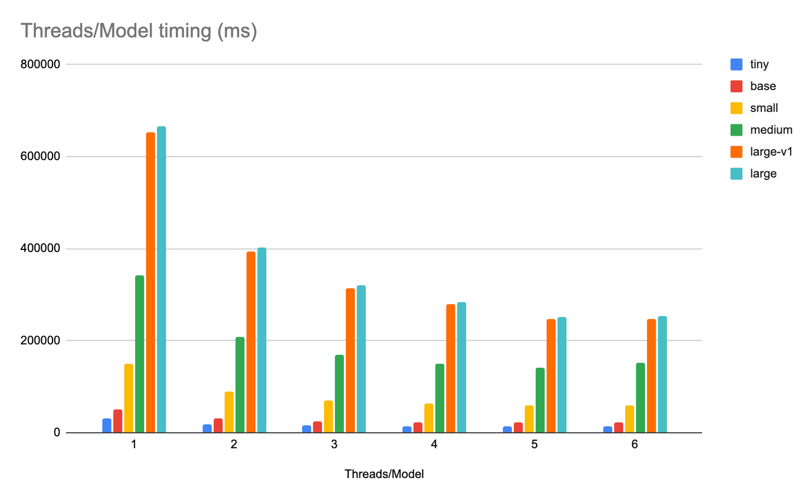
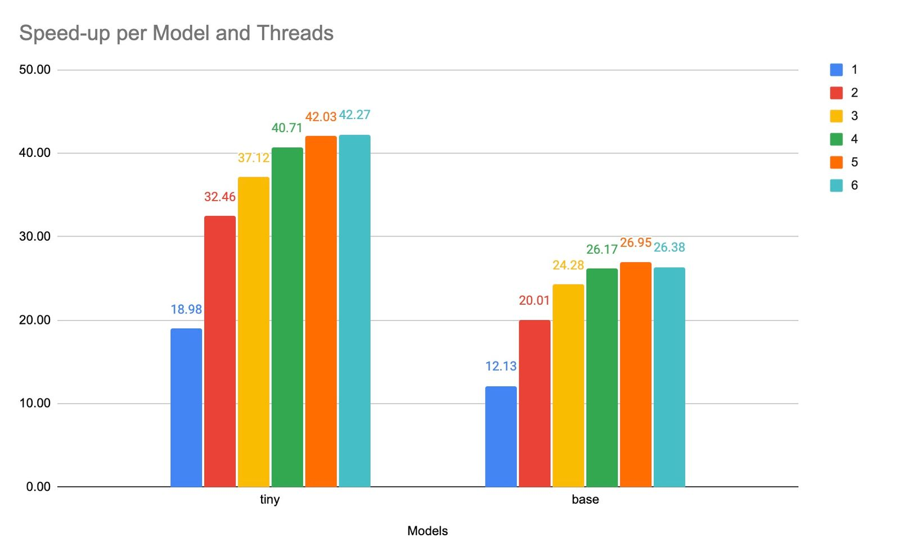
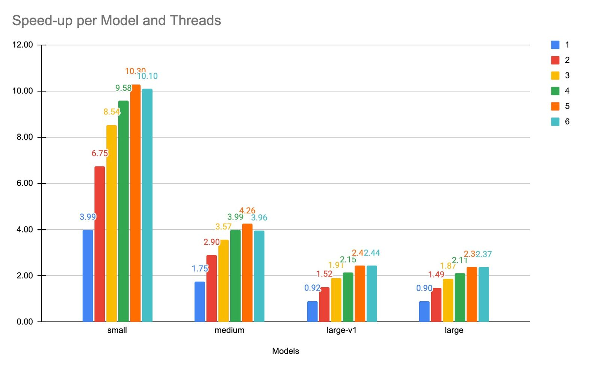
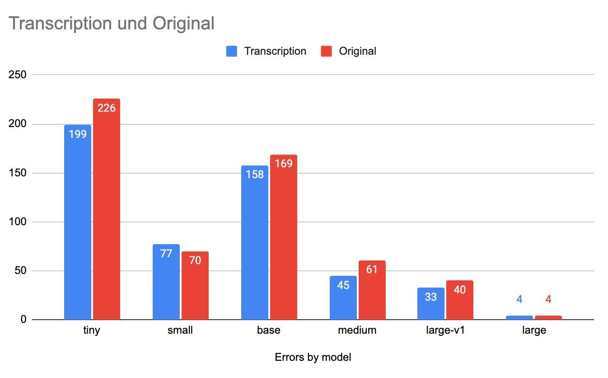
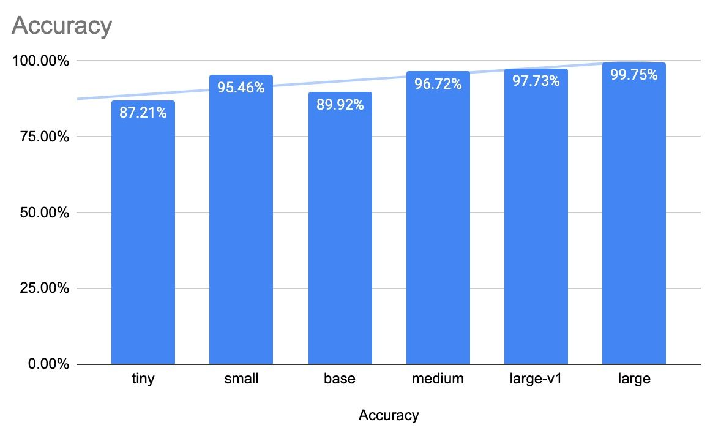
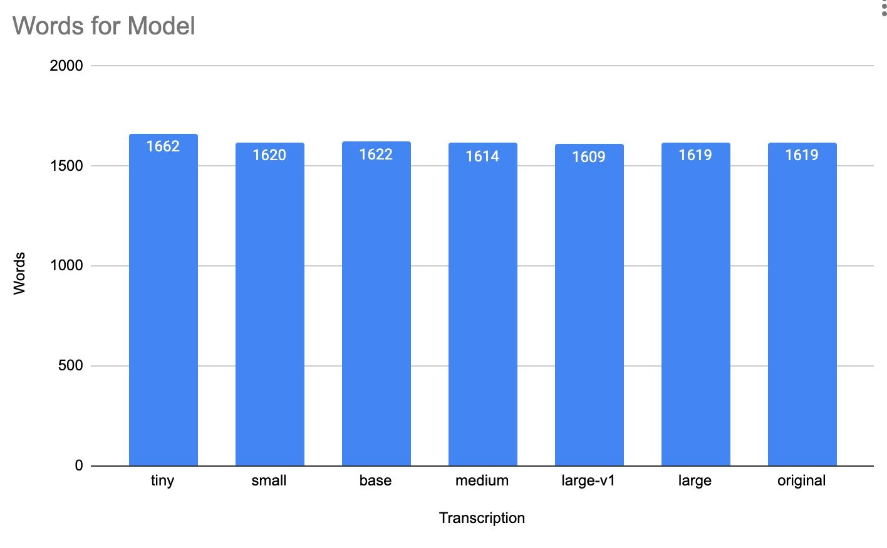
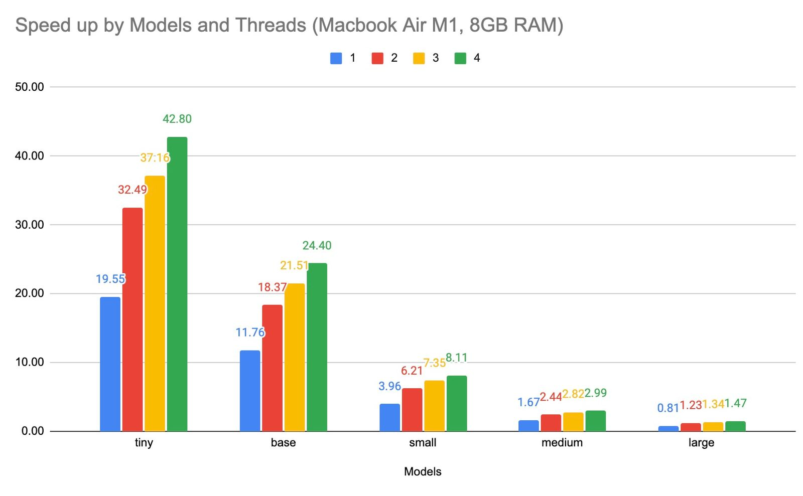

OpenAI Whisper on Apple M1
OpenAI released Whisper in September 2022 as Open Source. To achieve good performance, you need an Nvidia CUDA GPU with > 8 GB VRAM.
Recently, Georgi Gerganov released a C++ port optimized for CPU and especially Apple Silicon Platform. So I tried this out.
I run all of that on a Macbook Pro with a M1Pro CPU (6 performance and 2 efficiency cores) and 32 GB RAM. I want to run one 10 minute audio file in German with different number of cores and different models (tiny, base, small, medium, large). For more on the models and how it works, see the readme of Georgi. I used an exact 10-minute audio clip (search for podcast with the itunes:duration600</itunes:duration> in the RSS feed) from []‘Was jetzt?’ Zeit Podcast](https://www.zeit.de/serie/was-jetzt).
Speed
The following graph shows the total time from Whispers output in milliseconds.

I split between tiny and base and the rest, because they are so much faster for the speed-up real-time comparison of a 10-Minute audio clip.


In the higher models (with hopefully the best quality), I got a ~ 2x speed-up, with the smaller model a 10-40x.
I wonder how good a CUDA GPU would perform. I don’t have one, maybe you have? Furthermore, I put everything into a Github Repo, so you can see the numbers and how I ran the benchmark. I also added a Python version which should ran with a CUDA GPU (but I never tested it).
Accuracy
Next up is the accuracy. Which model to choose? The benchmark saves the output as SRT, VTT and text file for each model. Time to compare.
This is a tricky one. I choose a very simple approach. I copied and edited a (large model generated) file by hand to what I heard in the audio file. Then I subtract all these words from the ones by the model. All words which are left are an error (in transcription and original). I also assume, all models produce the same output when running on different number of threads. So I took the 4 thread version.

If I combine the words left in the original file and the transcribed one, I get the following results. I know this is a very light approach in checking accuracy. But I did not know better (without checking everything by hand).

Different models generated different amount of words.

I edited a large model to make it the original. Only 4 words were wrong (if I read it correctly).
Conclusion
No surprise, the large model seems to be the best. For lower accuracy (and much faster speed) the small model is doing very well in my test. I will need to investigate that further. For sentiment analysis, the tiny model might be good (and I have no idea how to do that).
If I ran the large model (the best quality!) on 2 cores, I can run 3 tasks like that. That means in 402 seconds, I can transcribe 30 minutes of audio on my MacBook Pro, which results in ~4,5 speed-up. One process takes ~ 5 GB of RAM with the large model.
A Mac Studio M1 Ultra with 64 GB RAM and 16 performance cores would run 8 of these, resulting in an ~ 11,9 speed-up. This will cost you €4600. I need an Nvidia Cuda comparison to see how that matches up.
I did not measure power usage during the tests.
The Python version of OpenAI Whisper runs on my Macbook with the large model in 662.5 seconds, which is ~ 10% slow down. That is faster than I expected. Apple Silicon PyTorch and OpenWhisper (Python) are coming. This will be interesting.
This was a fun task.
Bonus
I ran the same test on a MacBook Air M1 with 8 GB RAM. Only 4 performance cores are available.

Tiny performance is about the same. With much less RAM and slower M1 (non-Pro) processors, you can see the numbers declining a lot.